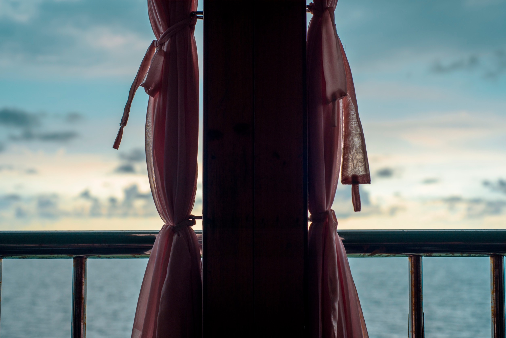
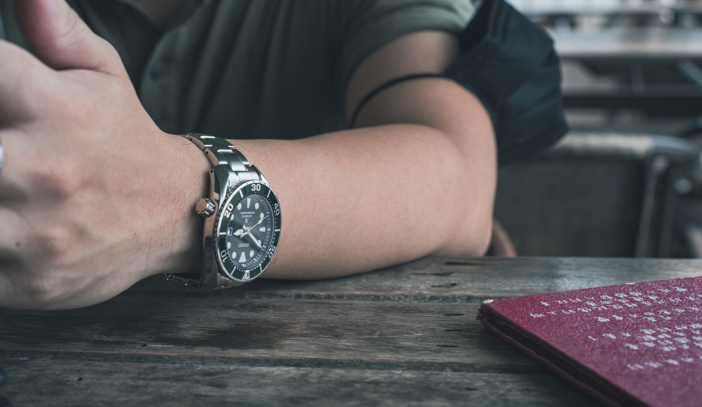
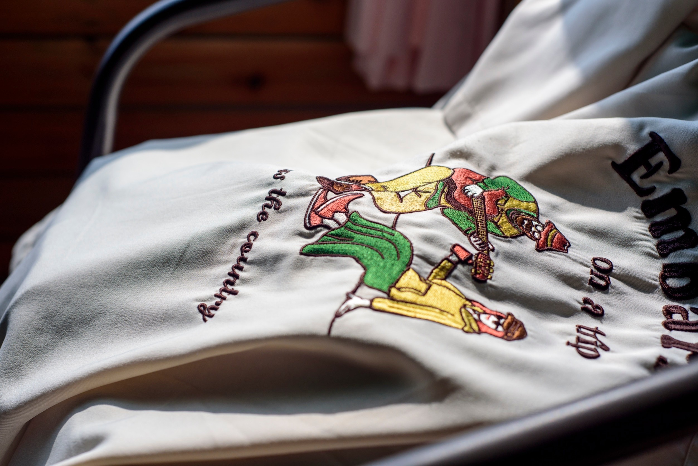
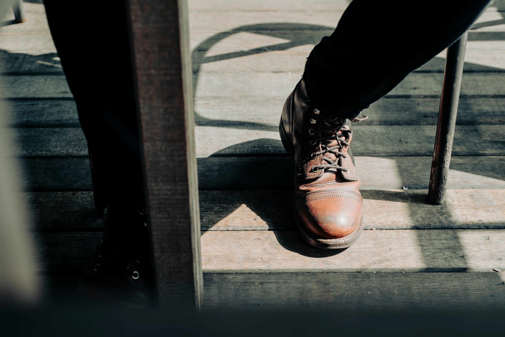
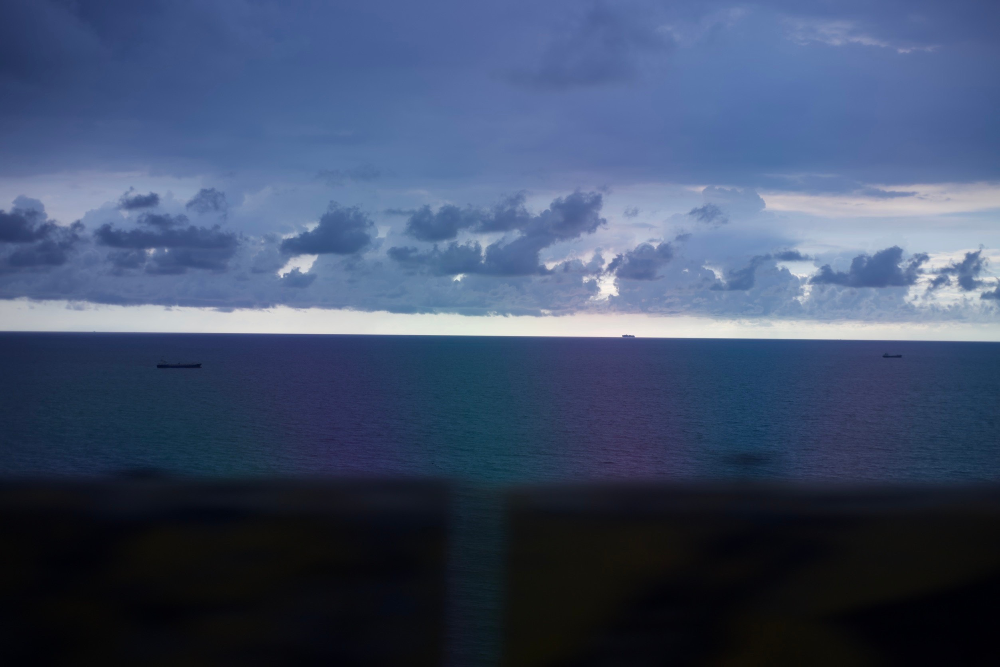
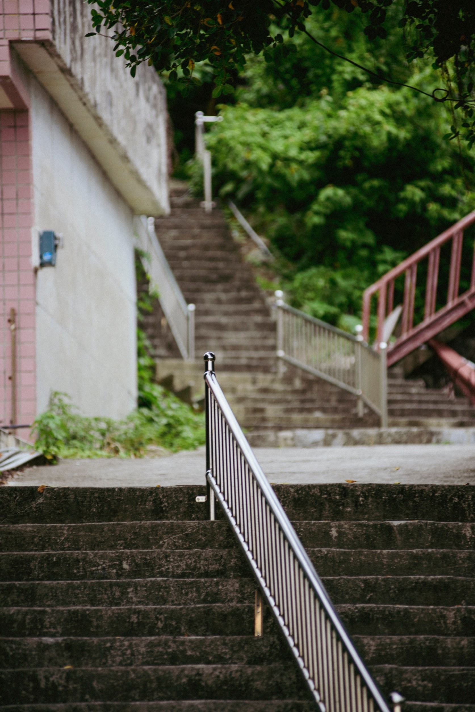
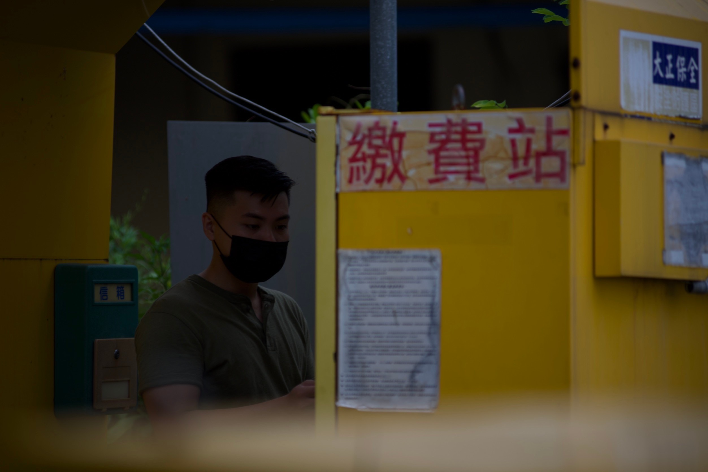
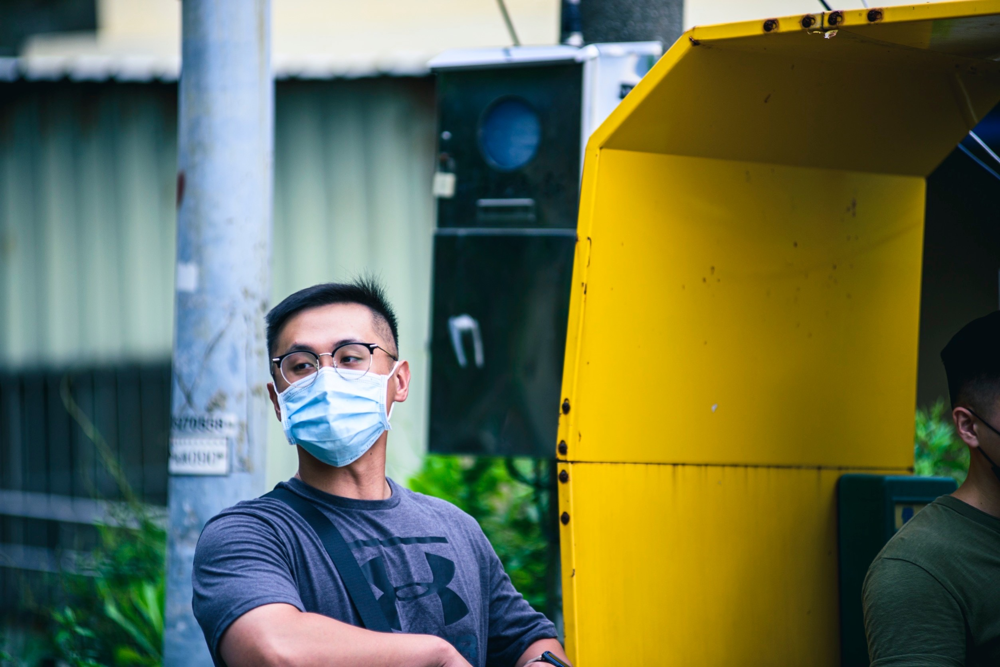

高雄，也許很多人聯想到的是炎熱的夏天...輕軌...愛河。但對我來說高雄是一個讓我又愛又恨的地方，我的大學四年都在這裡度過，體會過被當苦酸與無奈或與一群志同道合的大學同學，在那無數個夜晚，夜夜笙歌，也與那嘗過愛情的酸甜苦辣。
不知道何時就這樣愛上了這裡，但也是又愛又恨，愛的部分來自於愛情，恨的部分也是來自於愛情，哈哈哈。所以每當踏入高雄這塊土地時，不管是好的壞的記憶總是讓我記憶猶深，很多事情都回想起來，吃起來真的是鹹鹹的。
而前陣子當了警察的一位大學好友，剛好請了個特休，回來高雄，於是就找了幾個我們大學的好朋友聚一聚，講來羞恥，他們身為高雄人，竟然還要我這個台南人想，要去哪裡聚，好吧，反正我們大學好像都是這樣的相處模式，那我就來想一想。
於是我一直很想去的柴山秘境，我大學四年從來沒有在白天去過!!!，不要問，是不是只有去晚上，對!沒錯!所以我從來沒有看過白天的景色，於是我就跟他們講說去那邊的咖啡廳座座聊天，於是就開始了我們的旅程!
到了咖啡廳，映入眼簾的是一片海。
桌子旁的盆栽。
Seiko的綠水鬼。
沒有意義的袋子?
RedWing的靴子。
夕陽西下的海邊。
咖啡廳外的階梯。
沒有意義的繳費拍攝。
附上一張我親愛的壯壯警察朋友。
到了旅途的終點，我們暢談了一整個下午，看到朋友們都過得不錯，也在往自己人生的夢想邁進，期待下一次的聚會。